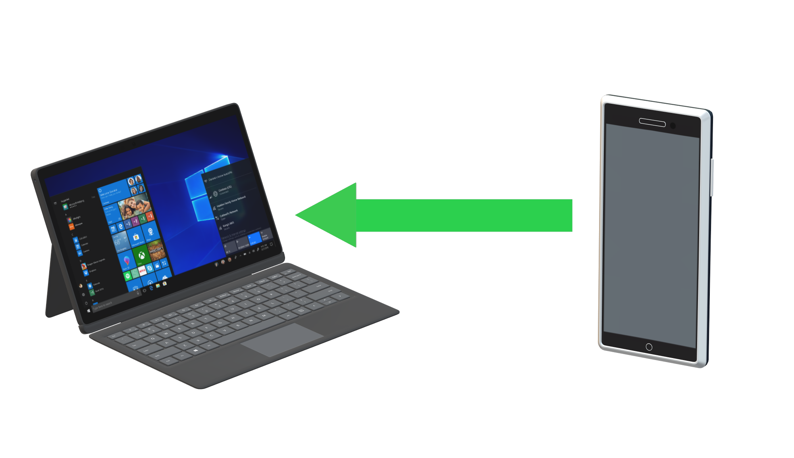

PAN's full form is Personal Area Network. It is a computer network often used to connect one or more devices together.
PAN provides data transmission among devices such as computers, smartphones, tablets and personal digital assistants. PAN's can be used for communication among personal devices but for only within a range of 10 metres. PAN includes a netowrk ofone or more computers, phones & peripheral devices like printers, HDMI etc.
PAN is of 2 types:
No Extra Wires
In this type of PAN, there is no need of extra wires. So, users don't need to worry about cable or wire management. For connecting any two or more devices, only bluetooth is needed.
Extra Safety
PAN network is considered to be the safest network because all devixes and data are authorised. Therefor, it is impossible to hack into this network's data.
Portable
Since many types of PAN are wireless, it is easily to take it anywhere we want and exchange data.
Device Connectivity
In PAN network, we can connect many devices to one single device at the same time. i.e. we can connect printers, keyboard etc. to mobile phones.
Harmful To Health
PAN network is a wireless network, so, it releases harmful rays such as microwave signals. This can impact our health severely as well as animals by causing various health effects like brain damage and heart problems.
Data Transfer Rate
In comparision with other networks, PAN has a slower rate of Data Transmission. This is mainly due to the usage of bluetooth because it is slower in nature.
Signal Interference
PAN networks use Infared Rays to transfer data. Therefore, it can interfere with other radio signals and can experience data droppings. This means that it will abrupt the connection between any two devices.
There are many uses of PAN, both in Wireless and in Wired.
Eg. Barcode Scanners, peripherals like keyboards, mouse, printers;
game consoles, headsets etc.
Copyright © 2020 Network, All rights reserved
Research From:
Wikipedia.org
Orbit-computers-solutions.com
Computernetworktopology.com
rfwireless-world.com
purple.ai
comptia.org
hitechwizz.com
nibusinessinfo.co.uk
searchmobilecomputing.techtarget.com